5 Model
We present a formal model of set-of-scope expansion following the style of Flatt et al. (2012). Complete models, both in typeset form and executable form using PLT Redex, are available as model.zip.As a first step, we present a model where only run-time expressions are expanded, and implementations of macros are simply parsed. As a second step, we generalize the model to include phase-specific scope sets and macro expansion at all phases. The third step adds support for local expansion, and the fourth step adds first-class definition contexts. The model does not cover modules or top-level namespaces.
5.1 Single-Phase Expansion
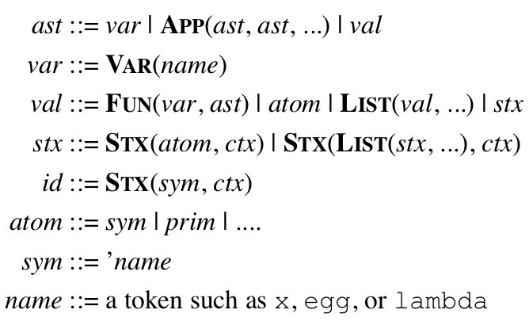
names, which are abstract tokens;
variables, which correspond to function arguments and references in an AST and are formed by wrapping a name as
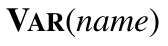
;symbols, which are values with respect to the evaluator and are formed by prefixing a name with a quote; and
identifiers, which are also values, are formed by combining a symbol with a set of scopes, and are a subset of syntax objects.
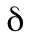
function to implement primitives: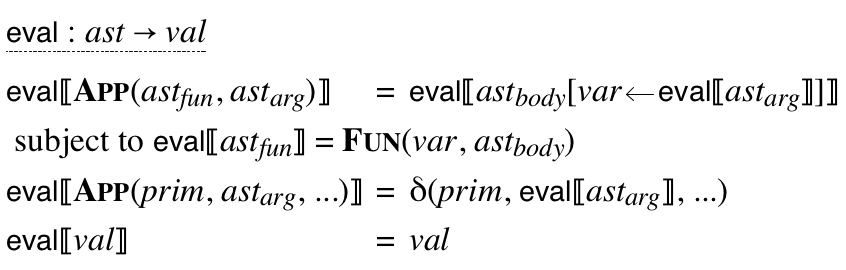
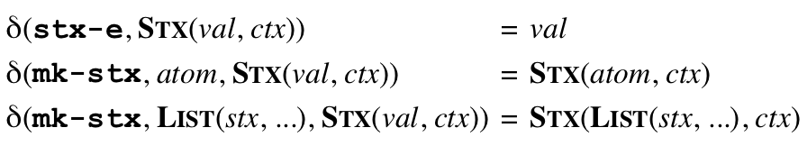
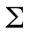
. The names ,
,  , and
, and
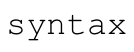
, represent the core syntactic forms, along with the implicit forms of function calls and variable reference: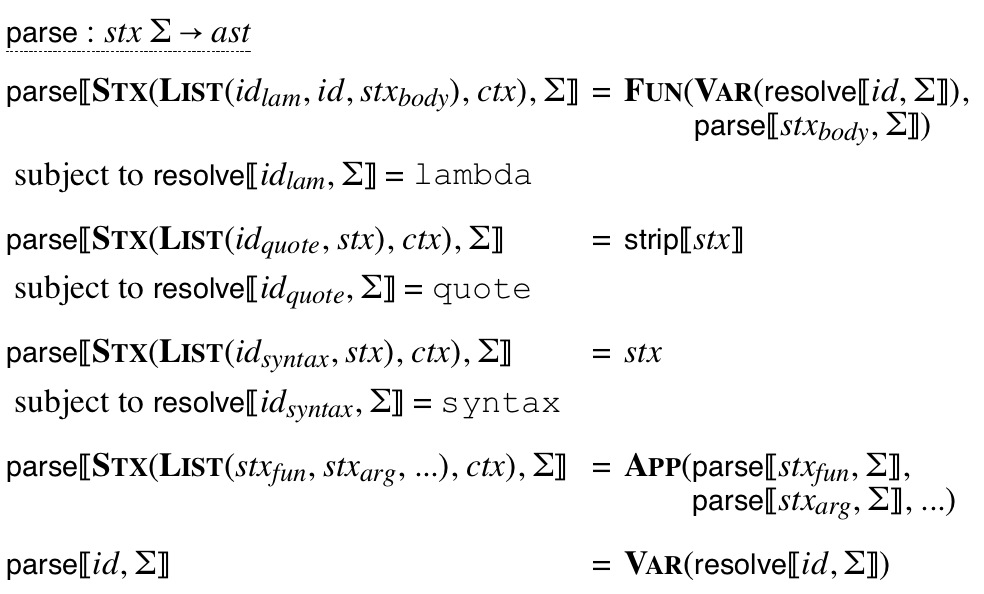
 metafunction extracts an identifier’s name
and its binding context. For now, we ignore phases and define a
binding context as simply a set of scopes. A binding store maps a name
to a mapping from scope sets to bindings, where bindings are
represented by fresh names.
metafunction extracts an identifier’s name
and its binding context. For now, we ignore phases and define a
binding context as simply a set of scopes. A binding store maps a name
to a mapping from scope sets to bindings, where bindings are
represented by fresh names.
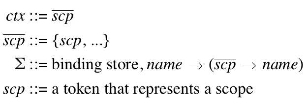
 metafunction uses these pieces along with a
helper function to select a binding. If
no binding is available in the store, the identifier’s symbol’s name
is returned, which effectively allows access to the four primitive
syntactic forms; the macro expander will reject any other unbound
reference.
metafunction uses these pieces along with a
helper function to select a binding. If
no binding is available in the store, the identifier’s symbol’s name
is returned, which effectively allows access to the four primitive
syntactic forms; the macro expander will reject any other unbound
reference.
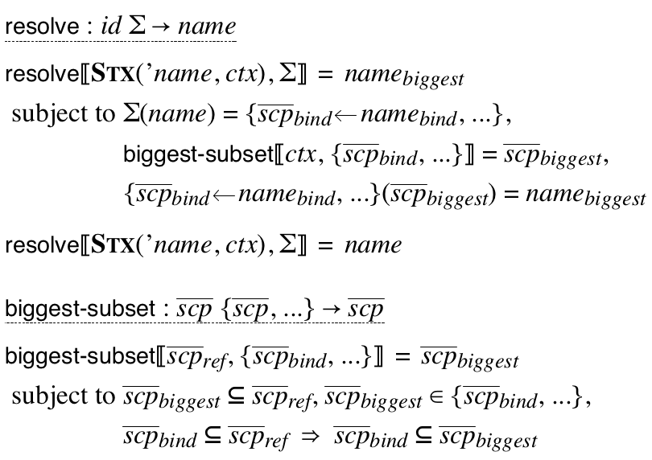
 metafunction.
In addition to a syntax object (for a program to expand) and a binding
store, the expander needs an environment,
metafunction.
In addition to a syntax object (for a program to expand) and a binding
store, the expander needs an environment,  , that maps
bindings to compile-time meanings. The
possible meanings of a binding are the three primitive syntactic forms
recognized by
, that maps
bindings to compile-time meanings. The
possible meanings of a binding are the three primitive syntactic forms
recognized by  , the
, the  primitive form, a reference to a function argument, or a compile-time
value—
primitive form, a reference to a function argument, or a compile-time
value—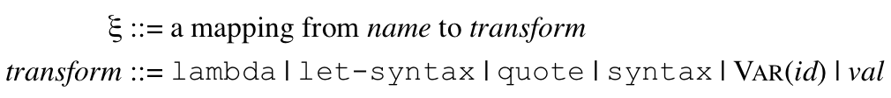
 metafunction produces a tuple containing an
updated binding store along with the expanded program. For example, the simplest
case is for the form, which leaves the body of the form
and the store as-is:
metafunction produces a tuple containing an
updated binding store along with the expanded program. For example, the simplest
case is for the form, which leaves the body of the form
and the store as-is:
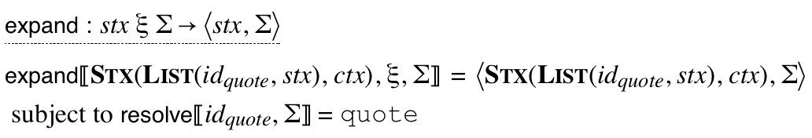
 , and it can be essentially the
same as
, and it can be essentially the
same as  .
.
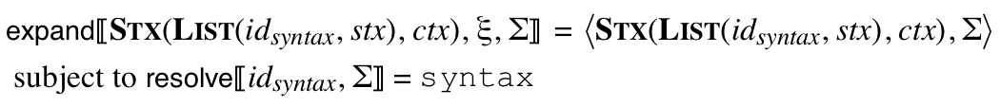
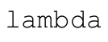
form creates a fresh name and fresh scope for the argument binding. Adding the new scope to the formal argument (we define the metafunction later) creates
the binding identifier. The new binding is added to the store,
metafunction later) creates
the binding identifier. The new binding is added to the store,
 , and it is also recorded in the compile-time environment,
, and it is also recorded in the compile-time environment,
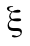
, as a variable binding. The body of the function is expanded with those extensions after receiving the new scope, and the pieces are reassembled into a form.
form.
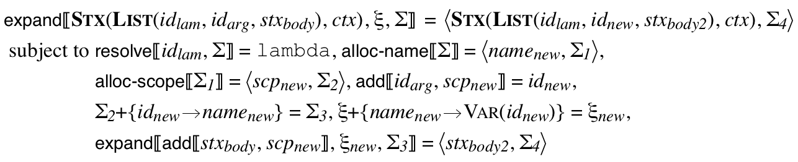
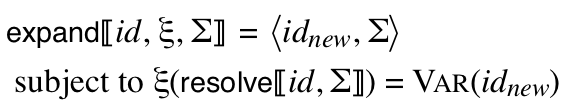
 is similar to
an argument binding, but the compile-time environment records a
macro transformer instead of a variable. The transformer is
produced by using
is similar to
an argument binding, but the compile-time environment records a
macro transformer instead of a variable. The transformer is
produced by using  and then
and then  on the
compile-time expression for the transformer. After the body is expanded,
the macro binding is no longer needed, so the body expansion is the
result.
on the
compile-time expression for the transformer. After the body is expanded,
the macro binding is no longer needed, so the body expansion is the
result.
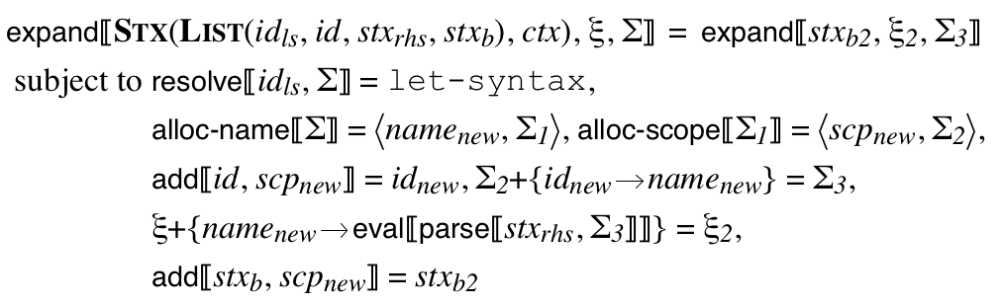
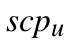
, and introduced syntax,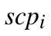
, where the introduced-syntax scope is applied using to both the macro argument and result, where
to both the macro argument and result, where
 corresponds to an exclusive-or operation to leave the
scope intact on syntax introduced by the macro (see below).
corresponds to an exclusive-or operation to leave the
scope intact on syntax introduced by the macro (see below).
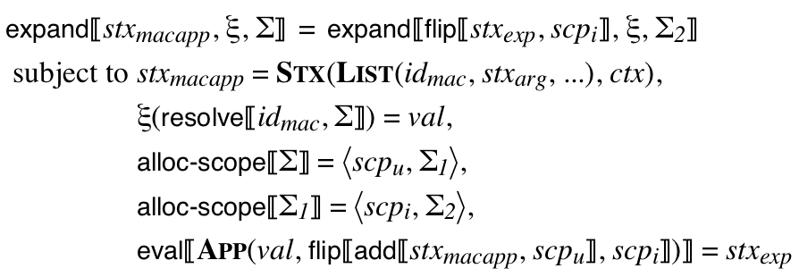
 is to recur for
function-call forms, threading through the binding store using
an accumulator-style helper:
is to recur for
function-call forms, threading through the binding store using
an accumulator-style helper:
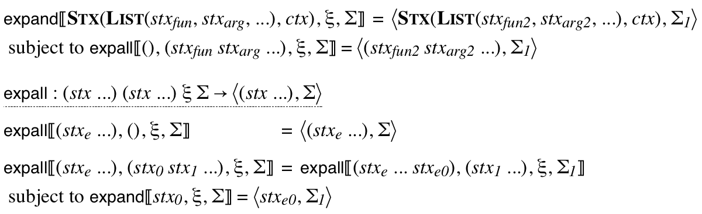
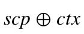
adds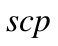
to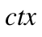
if is not already in or removes it otherwise:
or removes it otherwise:
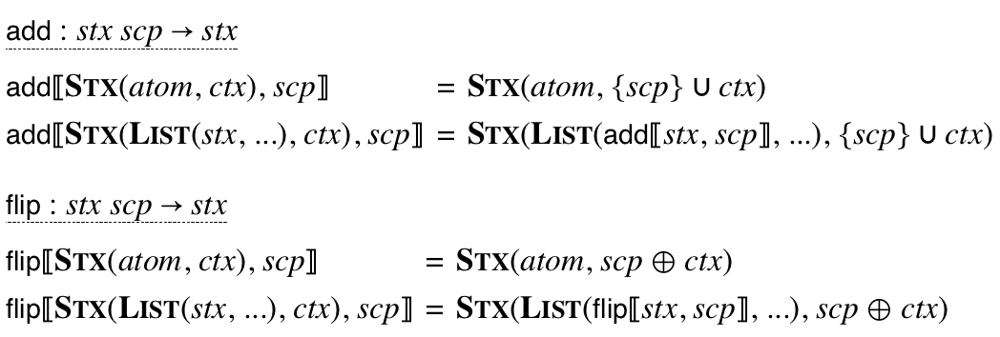
To take a program from source to value, use  ,
then
,
then  , then
, then  .
.
5.2 Multi-Phase Expansion
 so that it is a mapping from phases to scope
sets:This model is "phases-model.rkt" in model.zip.
so that it is a mapping from phases to scope
sets:This model is "phases-model.rkt" in model.zip.
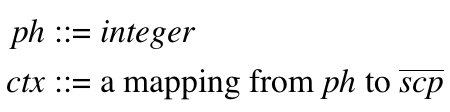
 depends on the current phase:
depends on the current phase:
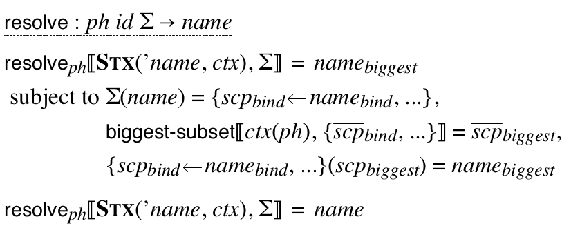
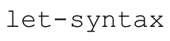
to expand the compile-time expression for a macro implementation, instead of just parsing the expression. Note that the uses of and on the transformer
expression are indexed by
on the transformer
expression are indexed by 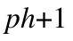
: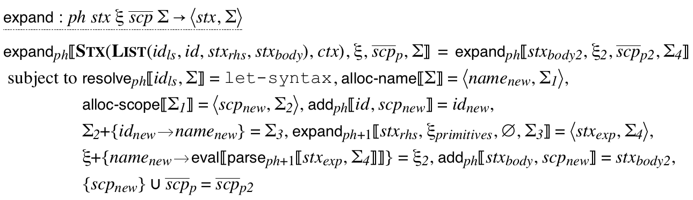
 takes a set of scopes created for bindings. Those scopes are the ones
to be pruned from quoted syntax by the revised
takes a set of scopes created for bindings. Those scopes are the ones
to be pruned from quoted syntax by the revised  expansion:
expansion:
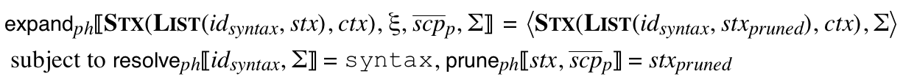
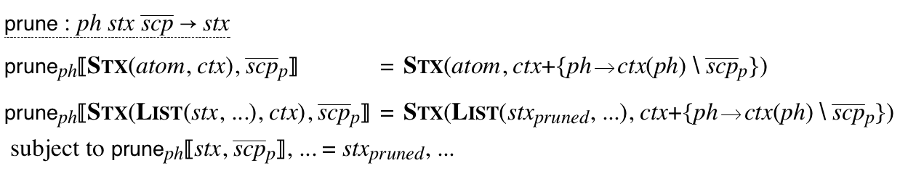
5.3 Local Expansion
Environment inspection via syntax-local-value
and local expansion via local-expand are accommodated in
the model essentially as in Flatt et al. (2012), but since local
expansion can create bindings, the  metafunction
must consume and produce a binding store. The
metafunction
must consume and produce a binding store. The  metafunction also must be index by the phase used for syntax
operations.
metafunction also must be index by the phase used for syntax
operations.
 must
both consume and produce scope sets for the current use-site scopes,
and binding scopes must also be available for local expansion of
must
both consume and produce scope sets for the current use-site scopes,
and binding scopes must also be available for local expansion of
 forms. To facilitate threading through all of that
information, we define
forms. To facilitate threading through all of that
information, we define 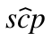
as an optional current scope and as an extended store:This
model is "local-model.rkt" in model.zip.
as an extended store:This
model is "local-model.rkt" in model.zip.
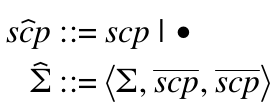
 tuple is a set of scopes to be
pruned at
tuple is a set of scopes to be
pruned at  forms. The third part is a subset of
those scopes that are the current expansion context’s use-site scopes,
which are pruned by syntax-local-identifier-as-binding.
The different parts of a
forms. The third part is a subset of
those scopes that are the current expansion context’s use-site scopes,
which are pruned by syntax-local-identifier-as-binding.
The different parts of a 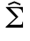
tuple vary in different ways: the part is consistently threaded through evaluation and
expansion, while the scope-set parts are stack-like for expansion
and threaded through evaluation. In the case of a macro-application
step, the scope-set parts of the tuple are threaded through expansion,
too, more like evaluation.
part is consistently threaded through evaluation and
expansion, while the scope-set parts are stack-like for expansion
and threaded through evaluation. In the case of a macro-application
step, the scope-set parts of the tuple are threaded through expansion,
too, more like evaluation.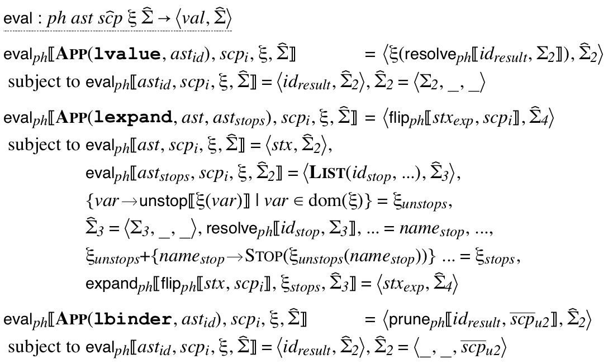
 uses a new
uses a new
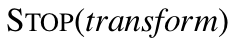
transformer to make an identifier a stopping point for expansion while remembering the former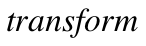
mapping of the identifier. The helper function strips away a constructor: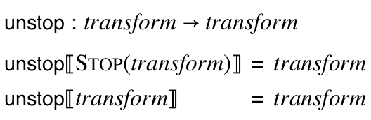
 transformers to
halt expansion at that point:
transformers to
halt expansion at that point:
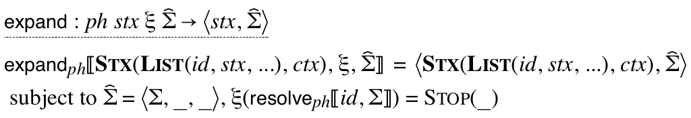
 shows
how the use-site scopes component of
shows
how the use-site scopes component of  is
updated and how the current application’s macro-introduction
scope is passed to
is
updated and how the current application’s macro-introduction
scope is passed to  :
:
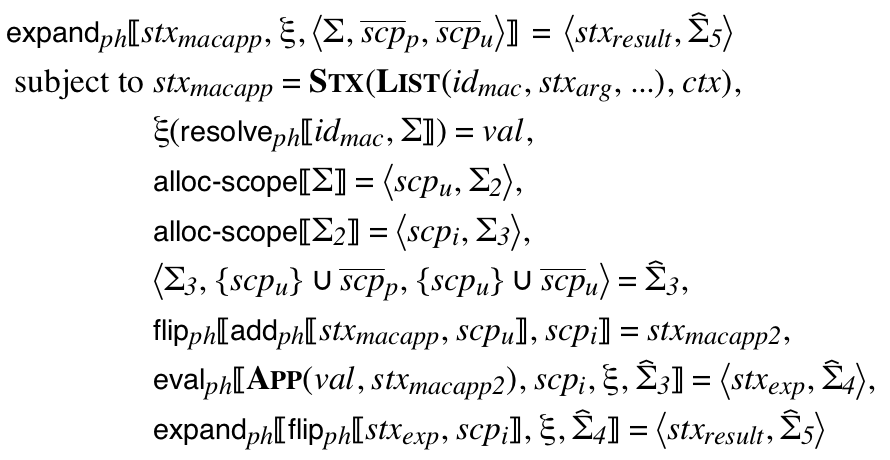
 rule shows how the pruning
scope set is extended for expanding the body of the function, the
use-site scope set is reset to empty, and all extensions are discarded
in the expansion’s resulting store tuple.
rule shows how the pruning
scope set is extended for expanding the body of the function, the
use-site scope set is reset to empty, and all extensions are discarded
in the expansion’s resulting store tuple.
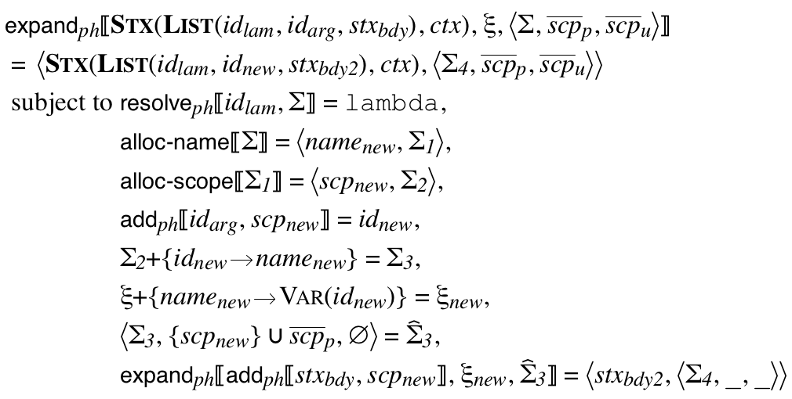
5.4 First-Class Definition Contexts
Supporting first-class definition contexts requires no further changes
to the  metafunction, but the
metafunction, but the  metafunction must be extended to implement the and
metafunction must be extended to implement the and
 primitives, which model the
syntax-local-make-definition-context and
syntax-local-bind-syntaxes functions. This model is
"defs-model.rkt" in model.zip.
primitives, which model the
syntax-local-make-definition-context and
syntax-local-bind-syntaxes functions. This model is
"defs-model.rkt" in model.zip.
 primitive allocates a new scope to represent
the definition context, and it also allocates a mutable reference to a
compile-time environment that initially references the current
environment. The two pieces are combined with a value
constructor:
primitive allocates a new scope to represent
the definition context, and it also allocates a mutable reference to a
compile-time environment that initially references the current
environment. The two pieces are combined with a value
constructor:
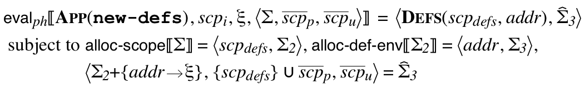
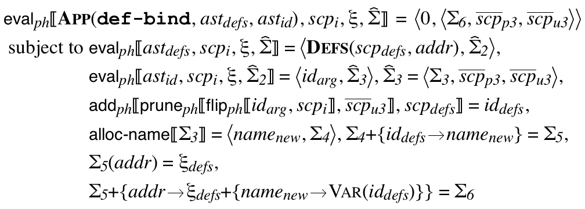
 is given an additional syntax object, it
expands and evaluates the additional syntax object as a compile-time
expression, and it adds a macro binding to the definition context’s
environment:
is given an additional syntax object, it
expands and evaluates the additional syntax object as a compile-time
expression, and it adds a macro binding to the definition context’s
environment:
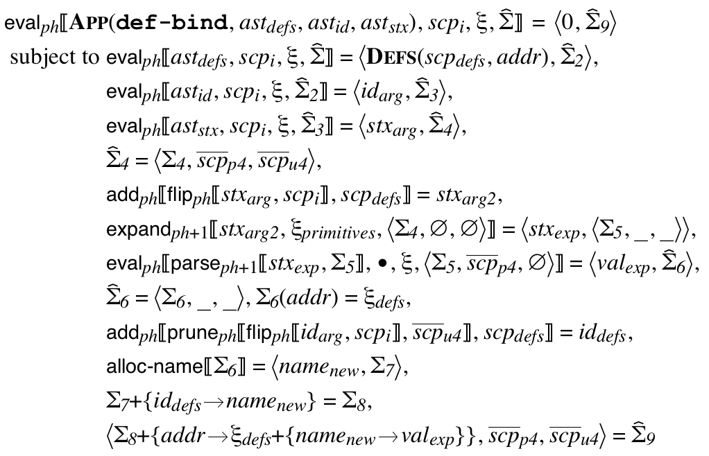
 in this mode defines a potentially
recursive macro, since the definition context’s scope is added to
compile-time expression before expanding and
parsing it.
in this mode defines a potentially
recursive macro, since the definition context’s scope is added to
compile-time expression before expanding and
parsing it. . The implementation of the new case for
. The implementation of the new case for
 is similar to the old one, but the definition
context’s scope is applied to the given syntax object before expanding
it, and the definition context’s environment is used for expansion.
is similar to the old one, but the definition
context’s scope is applied to the given syntax object before expanding
it, and the definition context’s environment is used for expansion.
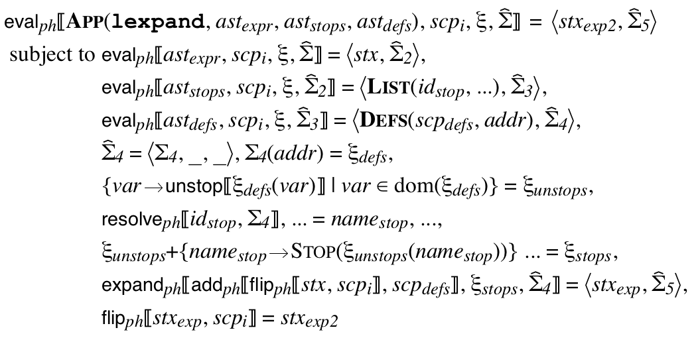